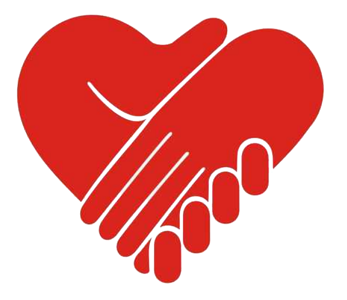

Home Who We Are What We Do Stories of Hope Get Involved News Room DONATE NOW

HandReach
Joining Hands for Hope and Healing
Current Campaigns
Giving hope and healing to children with traumatic injuries
OUR MISSON
HandReach's mission is to make sure that best practices in pediatric burn and amputee care and rehabilitation are available around the world, where they are needed most.
Trauma injuries happen around the world every minute of every day. Children who are otherwise healthy and normal find their bodies and minds changed suddenly and forever due to fire, abuse, accidents, warfare, or natural disaster. Millions of children are left behind every year around the world, particularly in developing countries, for want of the right intervention at the right time. Trauma injuries are among the most challenging and expensive conditions a human can sustain, and the heartbreaking problem is that it's the world's poorest people, particularly children, who are at highest risk.
HandReach recognizes that healing from trauma takes more than just one operation or one intervention. We are dedicated to developing a sustainable network around the world committed to the full physical and emotional recovery of child trauma survivors. We work to bring together the best hands in the world to provide acute, reconstructive, and psychosocial healing for pediatric burn and trauma survivors in the developing world through training and research on best practices, through bridging partnerships to improve clinical infrastructure, and through promoting joy and connection among trauma survivors, both inside and outside the hospital.